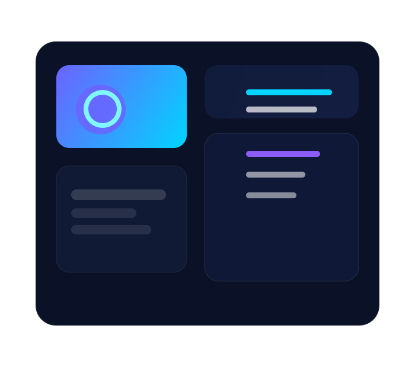

SignalPilot
Real-time voice insight layers for conversation coaching and product feedback.
AI • Software • Education
PHYWIX blends product thinking, machine learning craft, and practical education into a premium digital brand for builders who want to ship smarter.

About PHYWIX
PHYWIX is a modern studio for designing AI-native tools, crafting dependable software, and turning technical knowledge into high-value learning experiences.
Every project is guided by clarity, systems thinking, and a deep respect for the people who use the work. The result is a brand that feels as polished as the products it creates.
Featured Builds
Real-time voice insight layers for conversation coaching and product feedback.

A multi-tenant observability layer blending SQL pipelines, dashboards, and alerts.

Elegant workflow automation for product teams running rapid experiments.
Latest Tutorials
Structure your first production-ready machine learning workflow with evaluation and monitoring.
Read articleLearn how to write SQL that stays readable, performant, and maintainable.
Read articleTurn documentation into searchable, context-rich experiences with open-source components.
Read articleTechnologies